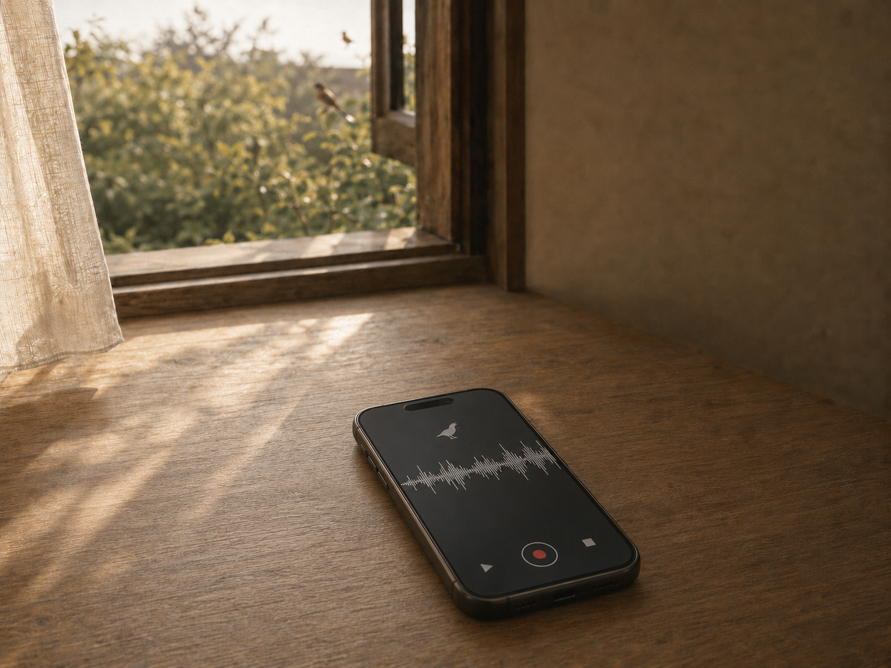
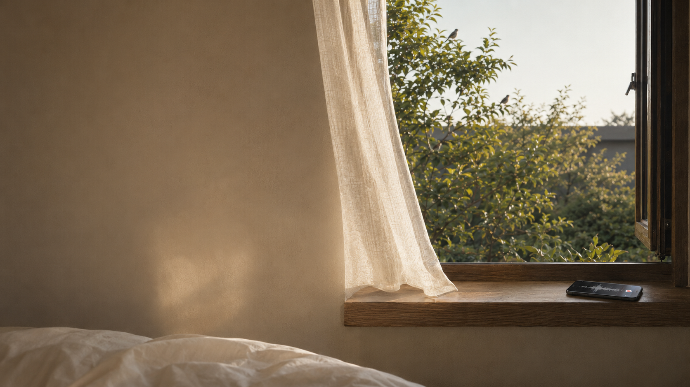
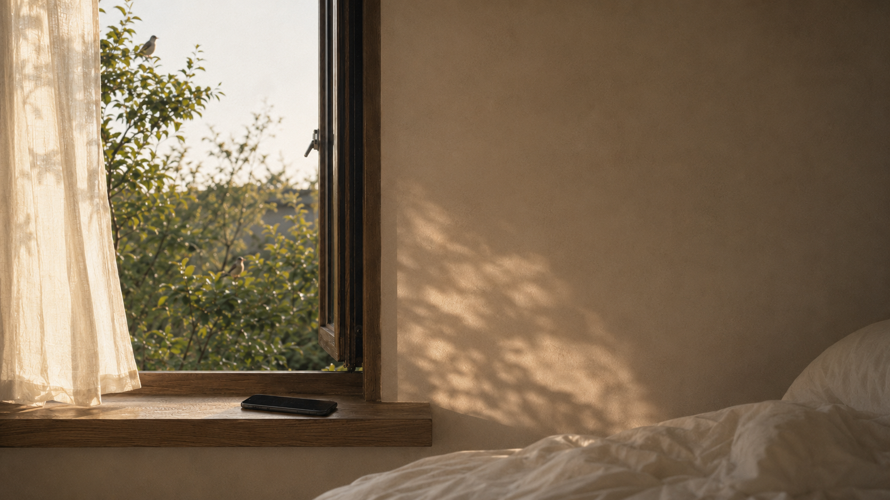

01 · THE MORNING
새소리가 먼저
창을 두드렸다.
제주에서 해커톤을 진행하던 어느 아침이었다. 호텔 정원에서 들려오는 새소리가 나에게 말을 거는 것 같았다.
스마트폰을 꺼내 그 소리를 녹음했다. 계획된 작업도, 전문 장비도 없었다. 한 번의 조용한 기록에서 이 노래가 시작되었다.


A real morning, heard four ways
IT’S BEEN A WHILE · SONGBIRDS
어느 제주 아침,
새들이 오래 만나지 못한 나에게
먼저 인사를 건넸다.
Scroll to listen
01 · THE MORNING
제주에서 해커톤을 진행하던 어느 아침이었다. 호텔 정원에서 들려오는 새소리가 나에게 말을 거는 것 같았다.
스마트폰을 꺼내 그 소리를 녹음했다. 계획된 작업도, 전문 장비도 없었다. 한 번의 조용한 기록에서 이 노래가 시작되었다.

02 · FOUR VOICES
같은 새소리에서 시작된 네 개의 감정. 재생할 목소리를 선택해 보세요.

새들이 부른 것은
아침이 아니라,
03 · ALBUM NOTE
새들은 무슨 일이 있었는지 묻지 않았다. 그저 괜찮냐고, 늦지 않았냐고, 잘 버텼다고 말하는 것 같았다.
노래를 만들고 나서야 알았다. 그 아침에 들은 것은 새소리만이 아니었다. 오랫동안 묻어두었던 마음이 다시 돌아오는 소리였다.
한 번의 새소리가
네 가지 목소리로 돌아왔다.